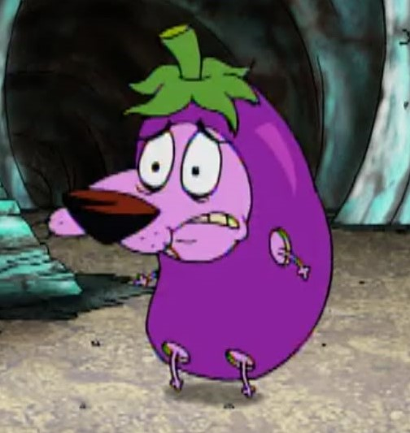
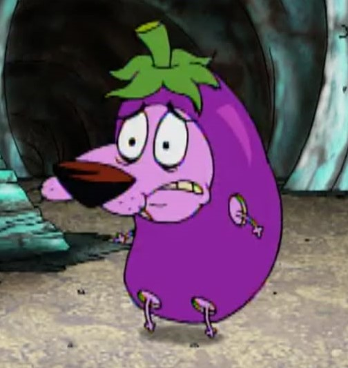
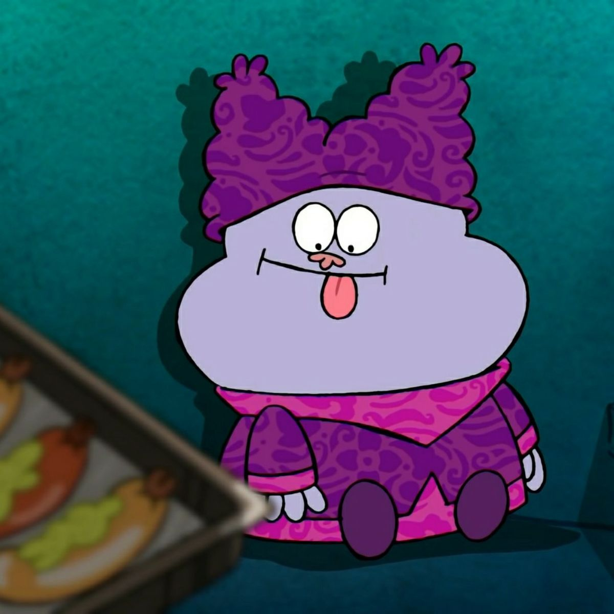
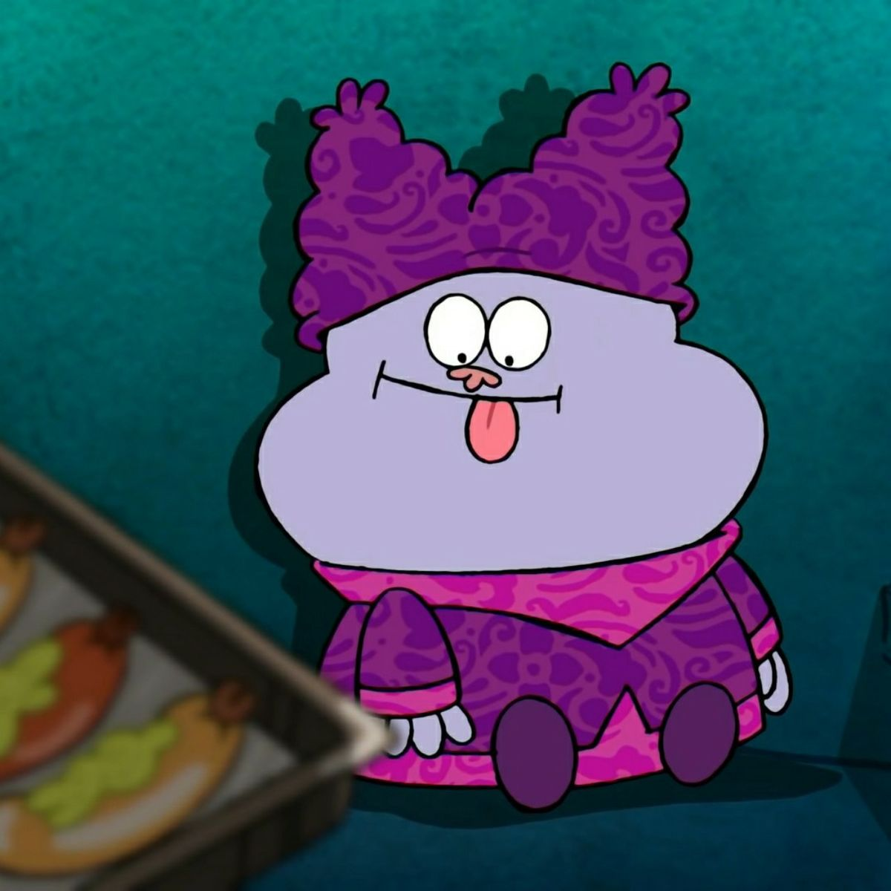

Me, me, me! — ♫
Wanna know more about me?
Yahooo! If you have read the information in "cottage". You would know that I'm Flora, 19 years old, college student and so on. My old site was being nuked by my own hands and I wanted to start fresh with this site. If you ask, will I keep this for long? Then yes, I think this site is ideal enough and I love the current me. Past self and sites wasn't expressive of how I truly am and I got too overwhelmed about it so I'm happy enough to restart my journey ♡
★ My kins
Popuko represent my chaotic side, Little My for the angry side, Derek Zoolander similar to my dense and silliness, Hinako Todabayashi for her friendliness, Shinzo Hattori as the apprentice, Courage with his cowardliness, Jeff Randell because of averageness, Chowder with immense gluttony
 

 

My likes & dislikes? ★
| Likes | Dislikes |
|---|---|
|
|
If you want to be my penpal/mutual/friend, consider email me at tsubasamoomin@gmail.com or leaving a comment at my neocities profile. Also, gah damn it I mentioned it thrice now xD